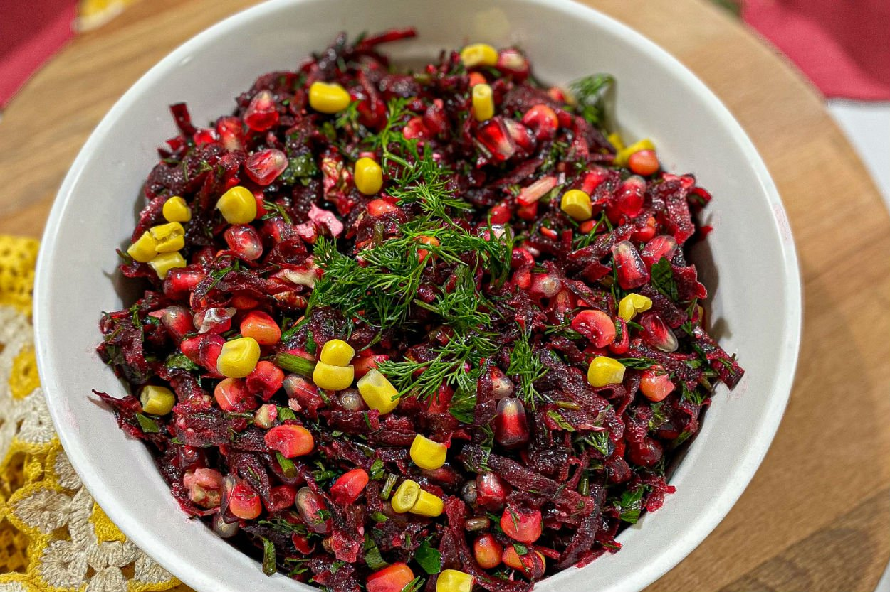

Hazırlık Süresi: 15 dakika
Pişirme Süresi: 30-40 dakika (pancarları haşlamak için)
Kişi Sayısı: 4

Malzemeler
- 3 adet pancar
- 1 adet kırmızı soğan (ince doğranmış)
- 2 yemek kaşığı zeytinyağı
- 1 yemek kaşığı sirke
- 1 tatlı kaşığı tuz
- Yarım tatlı kaşığı karabiber
- 1 tatlı kaşığı pul biber (isteğe bağlı)
- 1/4 su bardağı doğranmış ceviz içi (isteğe bağlı)
- Yarım su bardağı nar taneleri (isteğe bağlı)
- 1 tatlı kaşığı taze limon suyu
Tarif
- Pancarları iyice yıkayın ve bir tencereye alın. Üzerini geçecek kadar su ekleyin ve pancarları 30-40 dakika kadar haşlayın. Pancarlar yumuşayınca, soğumaya bırakın.
- Soğuyan pancarları soyun ve küp küp doğrayın.
- Bir kaba doğranmış pancarları, doğranmış kırmızı soğanı ve ceviz içini (isteğe bağlı) ekleyin.
- Zeytinyağı, sirke, tuz, karabiber, pul biber ve taze limon suyunu ekleyip karıştırın.
- Son olarak, nar tanelerini (isteğe bağlı) ekleyin ve salatanızı bir kez daha karıştırın.
- Pancar salatası hazır! Soğuk servis yapın ve yanında yoğurt veya ayran ile afiyetle yiyin!